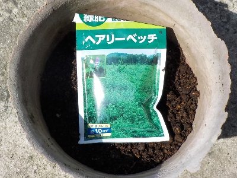
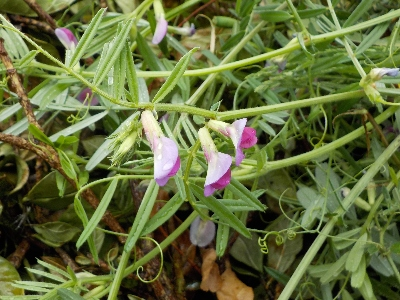
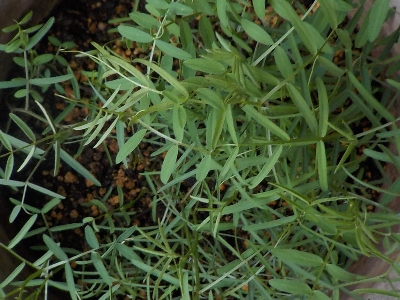
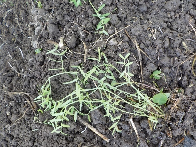
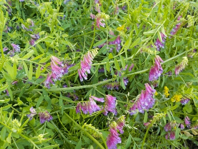
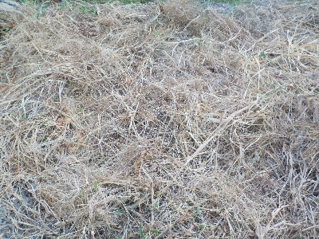

遊びで植物を育てよう
初めてなのでヘアリーベッチ・ナモイを大切に育てました。
更新日 : 2025/08/03
ヘアリーベッチ・ナモイを活用するつもりです。
更新日 : 2025/03/23

緑肥を買いました。これが雑草の草抑えなって肥料にもなるんだったら、とってもいい商品です。
本当にそんなに上手い話があるのか不安だったりします。
タネを何度も買うのが嫌なので、鉢で育ててタネを採取しようかと思ってます。
TOP > その他 > ヘアリーベッチ
ヘアリーベッチを大切に育てています。
更新日 : 2025/04/20

似た種類のカラスノエンドウは刈り取っていますが、ヘアリーベッチは育ててます。なんか変ですね。

カラスノエンドウより細くて弱弱しいです。こんなの地面に植えたら他の雑草に押しつぶされそうです。
TOP > その他 > ヘアリーベッチ
ヘアリーベッチの苗を植えつけました。
更新日 : 2025/05/04

普通の野菜のように、畝を作って苗を植えました。夏になって枯れるまでにどんだけ成長するんでしょうね。
後、タネがどれだけ収穫出来るんだろう？結果が楽しみです。
TOP > その他 > ヘアリーベッチ
ヘアリーベッチが茂っています。
更新日 : 2025/06/15

細くて弱弱しいので雑草に負けるんじゃないかと思ったんですが、ちゃんと成長してます。
小さい花が沢山咲いてきれいですね。順調にいったら沢山タネが出来そうです。
TOP > その他 > ヘアリーベッチ
ヘアリーベッチは夏草に負けました。
更新日 : 2025/07/26

枯れ草が地面を覆って雑草抑制になる予定でいましたが、夏草が伸びでヘアリーベッチはその下に隠れる形になりました。
なんか役に立ってないですね。
この後ヘアリーベッチのタネを収穫するために引っこ抜いたら、雑草と一緒に簡単に取れました。土を耕してからヘアリーベッチを植えたので、土が柔らかいままでした。
たぶん夏の暑さで、引っこ抜いたこの雑草は枯れるでしょう。そしてこの雑草が雑草抑止になりそうです。
結果役に立つかも。
TOP > その他 > ヘアリーベッチ
ヘアリーベッチと雑草がキレイに枯れました。
更新日 : 2025/08/03

連日の猛暑と水不足で草が全部枯れました。
想像していたヘアリーベッチの枯れ方となりました。これでしばらく草が生えないといいんですが、雨が降れば草が大量に生えるんだろうな。
＊その後、雑草はあまり生えませんでした。役に立ったようです。
TOP > その他 > ヘアリーベッチ
実際効果はあるのか？
【おいしいものを食べよう。】【たくさん寝よう。】
【ソロ活をしよう!】【季節感のあることをしよう。】【動画視聴はほどほどに。】【当サイトの全てのコンテンツは無断転載禁止です。】